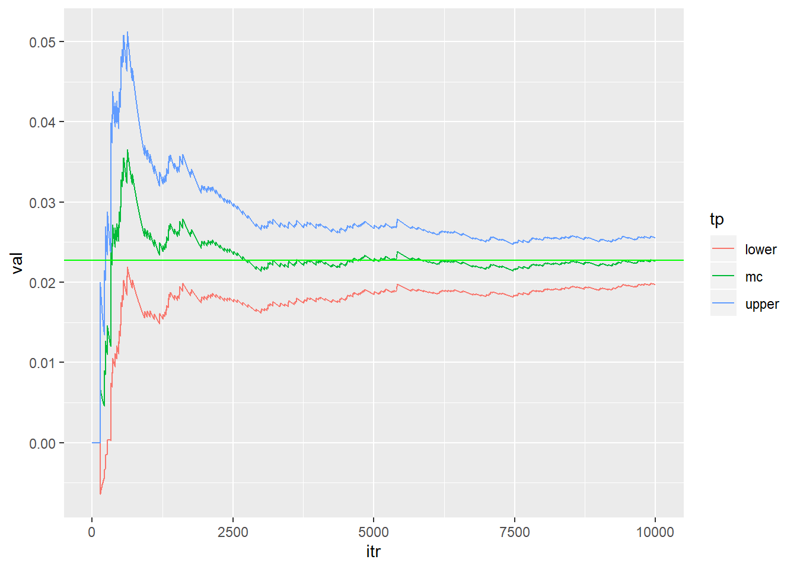

Chapter 1 Monte carlo approximation
Since GLMM can use EM algorithm in its maximum likelihood calculation (see McCulloch, 1994), it is practically useful to rehearse EM and other computing techniques.
Example: calculate the integral of \(p(z>2)\) when \(z \sim N(0,1)\). To use Monte Carlo approximation, we can have an indicator function, which will determine whether the sample from \(N(0,1)\) will be included into the calculation of the integral.
Nsim=10^4
indicator=function(x){
y=ifelse((x>2),1,0)
return(y)}
newdata<-rnorm(Nsim, 0,1 )
mc=c(); v=c(); upper=c(); lower=c()
for (j in 1:Nsim)
{
mc[j]=mean(indicator(newdata[1:j]))
v[j]=(j^{-1})*var(indicator(newdata[1:j]))
upper[j]=mc[j]+1.96*sqrt(v[j])
lower[j]=mc[j]-1.96*sqrt(v[j])
}
library(ggplot2)
values=c(mc,upper,lower)
type=c(rep("mc",Nsim),rep("upper",Nsim),rep("lower",Nsim))
iter=rep(seq(1:Nsim),3)
data=data.frame(val=values, tp=type, itr=iter)
Rcode<-ggplot(data,aes(itr,val,col=tp))+geom_line(size=0.5)
Rcode+geom_hline(yintercept=1-pnorm(2),color="green",size=0.5)## Warning: Removed 2 rows containing missing values (geom_path).